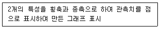
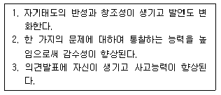
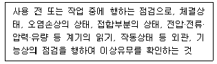

광학기능사 (2004-04-04 기출문제)
1과목: 광학일반
1. 빛의 반사 및 굴절에 관한 Snell의 법칙을 설명할 수 있 는 원리가 아닌 것은?
- Fermat의 원리
- 중첩의 원리
- Huygens의 원리
- Huygens-Fresnel의 원리
(정답률: 알수없음)

2. 점광원으로 간주될 수 있는 작은등이 60 cd의 발광강도를 가진다. 발광출력은 몇 lm인가?
- 60
- 377
- 754
- 1500
(정답률: 알수없음)
3. 굴절율이 1.5인 유리에서 굴절율이 1.0 인 공기로 입사하는 빛의 반사와 굴절에 관한 설명중 바르게 된 것은?
- 입사각이 tan-1(2/3) 보다 크면 반사계수의 크기는 입사광의 편광상태에 관계없이 1.0 이다.
- 입사각이 sin-1(2/3)보다 크면 반사계수의 크기는 입사광의 편광상태에 따라 다르다.
- 반사광이 직선편광이 되는 입사각은 존재치 않는다.
- 입사각이 tan-1(2/3)보다 크면 반사광의 위상은 입사광의 편광상태에 따라 다르다.
(정답률: 알수없음)
4. 굴절율이 1 인 매질에서 굴절율이 1.5 인 매질로 빛이 굴절할 때 두 매질내에서 서로 같은 인자는?
- 빛의 파장
- 빛의 속도
- 빛의 진동수
- 빛의 파수(wave number)
(정답률: 알수없음)
5. 맑은 날의 파란 하늘과 붉은 저녁 노을을 바르게 설명한 것은?
- 대기에 의한 빛의 굴절
- 대기에 의한 빛의 분산
- 대기에 의한 빛의 산란
- 대기에 의한 빛의 간섭
(정답률: 알수없음)
6. 광원에서 1m 떨어진 곳의 조도가 100럭스(lux)일 때 10m떨어진 곳의 조도는?
- 1 lux
- 10 lux
- 50 lux
- 100 lux
(정답률: 알수없음)
7. 색맹의 원인이 되는 것은?
- 각막의 결함
- 수정체의 결함
- 원통세포의 결함
- 원추세포의 결함
(정답률: 알수없음)
8. 사람 눈에서 빛의 굴절이 가장 크게 일어나는 부분은?
- 각막(cornea)
- 수양액(aqueous humor)
- 홍채(iris)
- 수정체(crystalline lens)
(정답률: 알수없음)
9. 다음에서 절대 굴절율을 나타내는 관계식은?
- 진공에서의 빛 속도/공기중의 빛 속도
- 유리의 굴절율/공기의 굴절율
- 입사각의 sin 값/굴절각의 sin 값
- 진공에서의 빛 속도/물질에서의 빛 속도
(정답률: 알수없음)
10. 다음 중 붉은 색깔과 가장 비슷한 빛 파장(nm)은?
- 450
- 500
- 570
- 630
(정답률: 알수없음)
11. 얇은 유리판 두 장을 겹쳐서 보면 유리판 사이에 무지개색깔의 무늬가 보이는 수가 있다. 이런 현상을 무엇이라 부르는가?
- 빛의 회절
- 빛의 산란
- 빛의 편광
- 빛의 간섭
(정답률: 알수없음)
12. 방향 표시가 되어있지 않은 편광필터가 있다. 이 필터의 편광방향을 알아낼 수 있는 방법이 아닌 것은?
- 해가 비치는 방향과 직각으로 하늘을 보며 필터를 돌려 본다.
- 편광 방향이 알려진 레이저 빛을 통과시켜 본다.
- 수면에 45° 정도로 반사되는 빛을 보며 필터를 회전시켜 본다.
- 햇빛을 통과시키면서 회전시켜 본다.
(정답률: 알수없음)
13. 이상적인 선형 편광필터 두 개를 직각으로 두면 빛이 통과할 수 없다. 이들 사이에 또 다른 필터를 45°로 넣으면 투과된 빛의 밝기는 어떻게 변하겠는가? (단, 필터 하나에 의한 투과광의 밝기를 Io 이라 하자.)
- 변화 없음
- Io 만큼 밝아진다.
- 1/2 Io 만큼 밝아진다.
- 1/4 Io 만큼 밝아진다.
(정답률: 알수없음)
14. 광 파이버의 중심부(core)의 굴절률(n내), 바깥부(cladding)의 굴절률(n외), 공기의 굴절률(n공)과의 관계는?
- n내 < n외 < n공
- n내 < n공 < n외
- n공 < n내 < n외
- n공 < n외 < n내
(정답률: 알수없음)
15. 다음 설명중 틀린 것은?
- 불붙은 담배에서 나오는 연기는 빛의 산란에 의해 파랗게 보인다.
- 입에서 내뿜어진 담배 연기는 반사, 굴절에 의해 뿌옇게 보인다.
- 공해에 찌든 하늘은 산란에 의해 백색으로 보인다.
- 파장이 작을수록 작은 입자에 의한 산란이 잘 일어난다.
(정답률: 알수없음)
2과목: 광학가공
16. 광학기기의 분해능의 한계는 빛의 어느 성질 때문인가?
- 굴절
- 간섭
- 회절
- 산란
(정답률: 알수없음)
17. 초점거리 10cm인 볼록렌즈 앞 20cm되는 곳에 100cd의 광원이 있을 때, 렌즈 뒤 10cm인 곳에서의 조명도(lux)는?
- 200
- 1250
- 2500
- 10000
(정답률: 알수없음)
18. 초점거리가 10㎝인 렌즈의 앞쪽 15㎝ 되는 곳에 물체가 있다. 이 물체의 상에 대하여 올바르게 기술한 것은?
- 렌즈의 뒤쪽에 도립 허상
- 렌즈의 앞쪽에 정립 허상
- 렌즈의 뒤쪽에 도립 실상
- 렌즈의 앞쪽에 정립 실상
(정답률: 알수없음)
19. 얇은 금속박막에 빛을 입사시켰더니 10%가 투과하였다. 이 박막의 흡광도(optical density)는?
- 0.01
- 0.10
- 1.00
- 10.0
(정답률: 알수없음)
20. 시료를 통과한 빛이 입사광 세기의 30%였다. 반사를 무시할 때 이 시료의 흡수율(absorbance)는 얼마인가?
- 0.3
- 0.5
- 0.7
- 0.9
(정답률: 알수없음)
21. 광은 파동성과 입자성의 두 가지 성질을 가지고 있다. 파동적인 성질만을 모아 놓은 것은?
- 회절 , 광전효과
- 간섭 , 광전효과
- 광전효과 , 콤프톤효과
- 간섭 , 회절
(정답률: 알수없음)
22. 초점거리가 같은 A, B두 렌즈가 있을 때 A렌즈의 반경이 B렌즈의 두 배라고 가정하자. B렌즈에 대하여 A렌즈는 몇 배의 에너지를 모을 수 있는가?
- 1/4
- 1/2
- 2
- 4
(정답률: 알수없음)
23. 망원경의 배율을 가장 올바르게 정의한 것은?
- 대안 렌즈와 대물렌즈 초점거리의 곱이다.
- 대안렌즈와 대물렌즈의 구경비율이다.
- 대안렌즈에 대한 대물렌즈의 초점거리의 비율이다.
- 대안렌즈 초점거리를 말한다.
(정답률: 알수없음)
24. 구면거울 앞 20㎝되는 위치에 놓인 물체의 상이 거울 앞 60㎝ 위치에 생겼다. 이 거울의 초점거리는?
- 15㎝
- 20㎝
- 25㎝
- 30㎝
(정답률: 알수없음)
25. 빛의 삼원색으로 맞는 것은?
- 빨강, 노랑, 파랑
- 파랑, 노랑, 초록
- 노랑, 빨강, 초록
- 파랑, 초록, 빨강
(정답률: 알수없음)
26. 다음 중 렌즈의 곡률값을 측정하는 방법이 아닌 것은?
- 스페로메타를 이용하여 측정한다.
- 분광계를 이용하여 측정한다.
- 레이저 간섭계를 이용하여 측정한다.
- 기준 원기를 이용하여 간섭무늬로 측정한다.
(정답률: 알수없음)
27. 성형연삭(CG)을 할 때 다이아몬드 휠의 외경 선정방법 중 가장 적절한 것은? (단, D : 다이아몬드 휠의 외경, ø : 렌즈의 외경, R : 가공할 구면의 곡률)
- D < ø/2
- ø/2 < D < 1.4R
- ø < D < R
- 2ø < D < R
(정답률: 알수없음)
28. 렌즈의 성형가공(CG)중에 사용하는 연삭액에 대한 설명 중 틀린 것은?
- 연삭액은 연삭면의 거칠기에 큰 영향을 미친다.
- 연삭액은 다이아몬드 휠의 수명에 큰 영향을 미친다.
- 연삭액은 비열과 열전도율이 클수록 좋다
- 연삭액은 표면장력이 클수록 좋다
(정답률: 알수없음)
29. 일반적인 렌즈의 가공 순서로 맞는 것은?
- 성형가공(CG) → 정연삭 → 연마 → 센터링
- 정연삭 → 연마 → 성형가공(CG) → 센터링
- 정연삭 → 성형가공(CG) → 센터링 → 연마
- 성형가공(CG) → 연마 → 센터링 → 정연삭
(정답률: 알수없음)
30. 렌즈의 연마 방법중 최근의 고속연마기에 의한 연마방법의 가장 큰 장점은?
- 높은 생산성
- 높은 표면 정밀도
- 소량생산에 적합함
- 낮은 설비 비용
(정답률: 알수없음)
3과목: 광학기기
31. 커브 제네레이터에서 직경이 40mm인 다이아몬드 휠을 사용하여 곡률반경이 120mm인 렌즈를 가공할 때 다이아몬드 휠축과 렌즈축의 각도는 얼마인가? (단, 다이아몬드 휠의 끝단의 반경은 무시한다.)
- 8.5° (sin 8.5° = 0.148)
- 9.6° (sin 9.6° = 0.166)
- 10.5° (sin 10.5° = 0.182)
- 11.6° (sin 11.6° = 0.201)
(정답률: 알수없음)
32. 센터링할 때 가장 어려운 렌즈의 형태는?
- 양볼록렌즈
- 양오목렌즈
- 메니스커스
- 반구형 평볼록렌즈
(정답률: 알수없음)
33. Cold mirror를 설명한 것으로 맞는 것은?
- 자외선 영역을 반사하고 가시광선과 적외선 영역을 투과시키는 거울
- 자외선 영역과 가시광선을 반사하고 적외선 영역을 투과시키는 거울
- 적외선 영역을 반사하고 가시광선과 자외선 영역을 투과시키는 거울
- 적외선 영역과 가시광선을 반사하고 자외선 영역을 투과시키는 거울
(정답률: 알수없음)
34. 다음 중 저진공에서만 사용되는 진공계는?
- 슐츠 진공계
- 페닝 진공계
- 가이슬러관
- 냉음극 전리 진공계
(정답률: 알수없음)
35. 연마 면을 검사할 때 허용 스크래치/디그값이 60/40 이었다. 이는 무엇을 뜻하는가?
- 스크래치의 폭 : 0.06mm, 디그의 지름 : 0.04mm
- 스크래치의 폭 : 0.6mm, 디그의 지름 : 0.04mm
- 스크래치의 폭 : 0.06mm, 디그의 지름 : 0.4mm
- 스크래치의 폭 : 0.6mm, 디그의 지름 : 0.4mm
(정답률: 알수없음)
36. 어떤 쌍안경에 6x30으로 표기되어 있다. 이 쌍안경에서 출사동의 직경은?
- 5mm
- 6mm
- 30mm
- 180mm
(정답률: 알수없음)
37. 4칸델라(cd)의 광원이 탁자의 중앙 50cm 위에 매달려 있다. 탁자 중심에서의 발광 조도(lx)는?
- 4[lx]
- 16[lx]
- 20[lx]
- 25[lx]
(정답률: 알수없음)
38. 코어의 굴절률이 1.500, 클래딩의 굴절률이 1.489인 계단형 굴절률을 가진 광섬유의 모드간 시간지연(ns/km)을 구하면?
- 30ns/km
- 37ns/km
- 50ns/km
- 55ns/km
(정답률: 알수없음)
39. 다음 중 내시경에 사용되는 광원으로 적당한 것은?
- 헬륨네온 레이저
- LED
- 할로겐 램프
- 이산화탄소 레이저
(정답률: 알수없음)
40. 망원경을 제작하여 사물을 관찰할 때 물체 주위로 푸른색의 띠가 형성되었다고 할 때 다음 중 그 원인은?
- 색수차가 보정되지 않았다.
- 구면수차를 보정하지 않았다.
- 왜곡 현상에 의해 생기는 것이다.
- 코마 수차가 있기 때문이다.
(정답률: 알수없음)
41. 다음 중 인간이 눈으로 볼 수 있는 빛의 파장에 해당되는 것은?
- 230nm
- 550nm
- 550Å
- 900Å
(정답률: 알수없음)
42. 사진기용 렌즈계를 설계할 때 상의 왜곡을 줄이기 위한 방법으로 일반적으로 행하는 가장 적당한 설명은?
- 렌즈를 두 장 접착하여 사용하도록 설계한다.
- 렌즈를 비구면으로 설계한다.
- 동일한 렌즈사이의 중간지점에 조리개를 위치시킨다.
- 동일한 렌즈의 마지막 면에 조리개를 위치시킨다.
(정답률: 알수없음)
43. 프리즘 쌍안경을 제작하려고 한다. 대물렌즈의 크기는 30mm이고 접안 렌즈 크기는 10mm이다. 대물렌즈의 화각은 8도로 설정하였으며 8배의 배율을 만든다. 이 때 접안렌즈의 화각은 얼마로 하여야 하는가?
- 1도
- 3도
- 10도
- 64도
(정답률: 알수없음)
44. 가시광선에 대한 설명으로 올바른 것은?
- 사람 눈으로 볼 수 없는 영역이다.
- 파장의 범위가 1000nm ~ 7000nm까지 이다.
- 눈에 보이는 파란색은 가시광선에 속한다.
- X-선도 가시광선 영역에 있다.
(정답률: 알수없음)
45. 쌍안경의 대물 초점 거리가 120mm이고 대물 렌즈 크기가 50mm이며 배율은 8배이다. 이 쌍안경의 접안 렌즈의 초점거리는 얼마인가?
- 2.4mm
- 6.25mm
- 15mm
- 400mm
(정답률: 알수없음)
4과목: 질관리와 산업안전
46. 렌즈의 굴절능 즉 디옵터에 대한 설명이다. 내용이 틀린 것은?
- 초점거리가 짧을수록 굴절능은 큰 값을 갖는다.
- 초점거리가 길수록 굴절능은 큰 값을 갖는다.
- 초점거리가 10cm이면 10디옵터이다.
- 초점거리가 1m이면 1디옵터이다.
(정답률: 알수없음)
47. 구면렌즈의 수차에 대한 설명이다. 내용이 틀린 것은?
- 렌즈의 재질이 빛의 파장에 따라 굴절률이 다르기 때문에 색수차가 생긴다.
- 물체가 렌즈계의 광 축에서 떨어져 있을 때 일어나는 수차에 코마(coma)가 있다.
- 광학계의 축위에 놓여 있는 점 물체에서도 구면 수차가 발생한다.
- 물체점의 위치가 광학계의 광축으로부터 멀수록 비점 수차는 작아진다.
(정답률: 알수없음)
48. CCTV 카메라 렌즈계 초점거리가 7.84mm이고, 앞쪽 렌즈의 유효경이 28mm, 뒤쪽 마지막 렌즈의 유효경이 14mm이며, 밝기(F넘버)는 1.4이었다. 이 렌즈계의 조리개 직경(mm)은 얼마인가?
- 0.28
- 2.0
- 10
- 5.6
(정답률: 알수없음)
49. 카메라 줌 렌즈에서 초점거리가 28mm에서 1⑤mm까지 변화하였으며, 밝기 F넘버가 1.4에서 2.0까지 변화했다. 이 렌즈의 줌 비는 얼마인가?
- 3.75배
- 1.43배
- 75배
- 2.8배
(정답률: 알수없음)
50. 카메라 교환렌즈의 밝기(F)가 1.4, 2.0, 2.8, 4, 5.6, 8이란 숫자로 적혀 있었다. 밝기가 가장 밝은 숫자는?
- 8
- 4
- 2.8
- 1.4
(정답률: 알수없음)
51. 육체적 작업을 하는 근로자가 필요로 하는 영양소 중에서 열량공급 측면에서 가장 좋은 것은? (단, 다른 조건은 무시하고 단지 열량공급 측면에서)
- 비타민
- 지방
- 단백질
- 탄수화물
(정답률: 알수없음)
52. 품질이라고 하는 용어의 설명으로 가장 부적절한 것은?
- 명시 또는 암묵의 요구를 만족시키는 능력에 관한 특성의 전체를 말한다.
- 좁은 의미의 품질은 유리, 컵, 연필, 등 형태가 있는 것을 대상으로 한다.
- 넓은 의미의 품질은 서비스, 납기, 교육효과 등 형태가 없는 것까지도 포함한다.
- 과거에는 넓은 의미의 품질을 대상으로 품질관리를 행해왔지만 현재는 좁은 의미의 품질을 대상으로 품질관리를 행하고 있다.
(정답률: 알수없음)
53. 다음 설명에 해당되는 것은?

- 층별(stratification)
- 파레토도(Pareto diagram)
- 특성요인도(cause and effect diagram)
- 산포도(scatter diagram)
(정답률: 알수없음)
54. 다음 설명에 해당되는 교육훈련 기법은?

- 실연법
- 실습법
- 역할연기법
- 토의법
(정답률: 알수없음)
55. 다음 사항이 나타내는 안전점검은?

- 일상점검
- 정기점검
- 특별점검
- 세부점검
(정답률: 알수없음)
56. 우리나라 산업안전보건법상 산업재해라 함은 사망자와 몇 일 이상의 요양을 요하는 부상 또는 직업성 질환을 입었을 때를 말하는가?
- 2일이상
- 4일이상
- 5일이상
- 7일이상
(정답률: 알수없음)
57. 강력한 소음에 오랫동안 노출되었을 때 발생될 수 있는 작업 병은?
- 진폐증
- 소음성 난청
- 피부병
- 백혈병
(정답률: 알수없음)
58. 스치거나 문질러서 발생된 재해를 무엇이라고 하는가?
- 찰과상
- 화상
- 부종
- 타박상
(정답률: 알수없음)
59. 한 근로자가 작업 중 감전되어 쓰러져 있는 것을 발견했을 때 다음 중 가장 먼저 취해야 할 조치는?
- 설비의 공급원인 스위치를 감압시킨다.
- 몸이나 손에 들고 있는 금속물체가 전선, 스위치, 모터 등에 접촉했는가 확인하고 떼어 낸다.
- 순간적으로 피해자의 감전상황을 판단한다.
- 만일 스위치의 위치를 알 수 없을 때는 고무장화, 절연고무장갑을 착용하고 구원한다.
(정답률: 알수없음)
60. 작업 중 유해물질이 발생될 경우에 근로자의 건강상 해롭지 않도록 하기 위한 대책이라고 보기 어려운 것은?
- 유해물질이 발생되지 않도록 공정을 변경한다.
- 유해물질이 발생되는 곳을 격리시키거나 포위시킨다.
- 국소배기장치 등을 이용하여 환기시킨다.
- 근로자에게 면마스크를 착용토록 하고 작업을 시킨다.
(정답률: 알수없음)